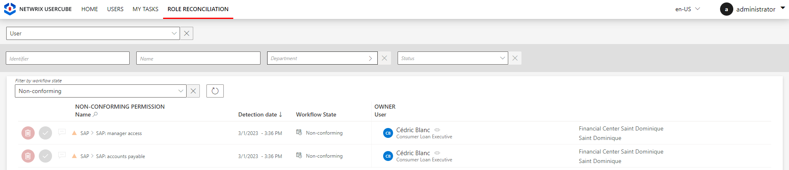
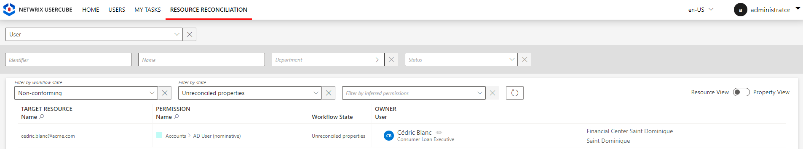
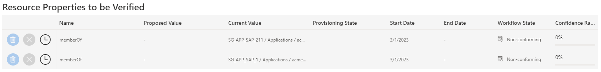
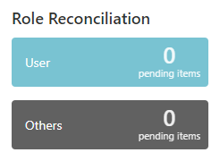
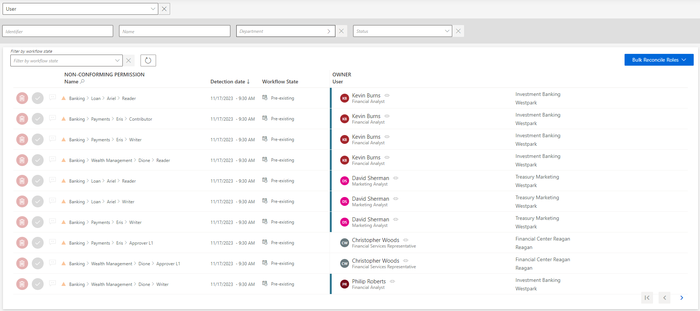

Reconcile a Role
How to review non-conforming permissions, i.e. approve or decline the role suggestions made by Identity Manager after every synchronization. The aim is to handle the differences between the navigation values from the managed systems and those computed by Identity Manager according to the role catalog.
Overview
Non-conforming roles are considered as non-conforming assignments because no rule from Identity Manager's model can justify their actual assignment to an identity.
Role reconciliation with property reconciliation
For some managed systems, roles are tightly linked to navigation properties.
For example, the AD hosts groups dedicated to various applications, and a role is assigned through group membership. An entitlement can be assigned to an identity by adding said identity's DN to the
memberproperty of the appropriate group. Identity Manager translates it by editing the identity'smemberOfproperty with the new group.
In this case, when a role is assigned in the managed system without an existing rule that justifies the role, then new items appear on the Role Reconciliationand the Resource Reconciliation screens.
In the case of the AD example, consider that we want to assign a specific role in SAP. Then, we find the corresponding group in the AD and add the identity's DN to its
memberproperty.
The result is a new item on the Role Reconciliation screen for said SAP role, plus an item on the Resource Reconciliation screen for the newmemberOfproperty for said identity.
If the identity didn't have an AD account yet, then it is automatically created, and the item on the Resource Reconciliation screen displays also a modification of theaccountExpiresproperty.
As roles and navigation properties are technically bonded together, their reviews are linked too:
- If the role is reviewed (approved/declined), then the corresponding property is automatically reconciled accordingly.
- If the property is reviewed (approved/declined), then the corresponding role is automatically reviewed too, its Entitlement Assignment workflow state transitioned to
Manual(if approved) orCancellation(if declined, then a deprovisioning order is sent).
So let's say we add
Cedric Blancto the list of members of the SAP groupsSG_APP_SAP_1andSG_APP_SAP_211. Then, after the next synchronization, Identity Manager displays one item for each role on the Role Reconciliation screen, and one item for all changes in the AD account on the Resource Reconciliation screen:


Participants and Artifacts
This operation should be performed in cooperation with managers who know their team's expected entitlements.
| Input | Output |
|---|---|
| Provision (required) |
Complying roles |
Review a Non-conforming Permission
Review a non-conforming permission by proceeding as follows:
-
Ensure that the Compute Role Model Task was launched recently, through the complete job on the Job Execution page

Or through the connector's overview page, Jobs > Compute Role Model.

-
On the home page, click on the entity type that you want to manage in the Role Reconciliation section, to get to the non-conforming permissions page.


Each non-conforming permission can be commented by clicking on the corresponding icon.
-
Choose one of the two possibilities to verify the permission:
Contrary to resources, reviewed roles are then displayed on the Role Review page accessible from the home page, and can be reviewed again.
- Either click on the approval icon to keep the non-conforming permission.
- Or click on the decline icon to delete the non-conforming permission.
-
Trigger provisioning by launching, on the appropriate connector's overview page, Jobs > Generate Provisioning Orders, then, after this first task is done, Jobs > Fulfill. See the Provision topic for additional information.
Use bulk provisioning
Several roles can be reconciled simultaneously by clicking on Bulk Reconcile Roles.
Verify Role Reconciliation
In order to verify the process, check that the changes you ordered appear on the corresponding user's View Permissions tab.